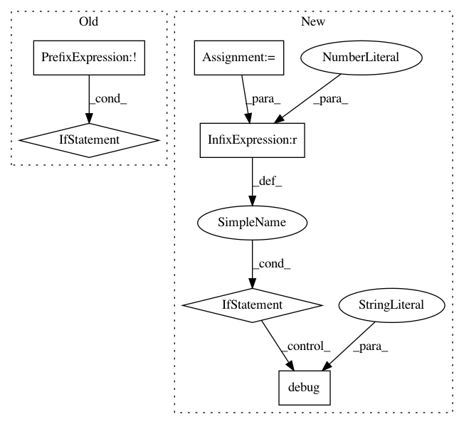

10761d179f88347b8155671d16b501ca85dcc162,smac/intensification/intensification.py,Intensifier,eval_challenger,#Intensifier#Any#Any#Any#Any#Any#,137
Before Change
return incumbent, inc_perf
// if first ever run, then assume current challenger to be the incumbent
if self.first_run and not incumbent:
self.logger.info("First run, no incumbent provided; challenger is assumed to be the incumbent")
incumbent = challenger
self.current_challenger = None
self.first_run = False
self.logger.debug("Intensify on %s", challenger)
if hasattr(challenger, "origin"):
self.logger.debug("Configuration origin: %s", challenger.origin)
After Change
self.logger.info("First run, no incumbent provided; challenger is assumed to be the incumbent")
incumbent = challenger
else:
inc_runs = run_history.get_runs_for_config(incumbent, only_max_observed_budget=True)
if len(inc_runs) > 0:
self.logger.debug("Skipping RUN_FIRST_CONFIG stage since incumbent is already run before")
self.stage = IntensifierStage.RUN_INCUMBENT
self.logger.debug("Intensify on %s", challenger)
if hasattr(challenger, "origin"):
self.logger.debug("Configuration origin: %s", challenger.origin)
In pattern: SUPERPATTERN
Frequency: 3
Non-data size: 6
Instances
Project Name: automl/SMAC3
Commit Name: 10761d179f88347b8155671d16b501ca85dcc162
Time: 2020-03-17
Author: ashraaghav@gmail.com
File Name: smac/intensification/intensification.py
Class Name: Intensifier
Method Name: eval_challenger
Project Name: senarvi/theanolm
Commit Name: b73fc0c21ea55c7d3357fbf633944e1e67db8bdf
Time: 2016-07-31
Author: seppo.git@marjaniemi.com
File Name: theanolm/scoring/latticedecoder.py
Class Name: LatticeDecoder
Method Name: decode
Project Name: samuelclay/NewsBlur
Commit Name: 9ffa63ec2b1d80812e6a242e36fa856d70952f4e
Time: 2016-11-16
Author: samuel@ofbrooklyn.com
File Name: apps/notifications/models.py
Class Name: MUserFeedNotification
Method Name: push_feed_notifications